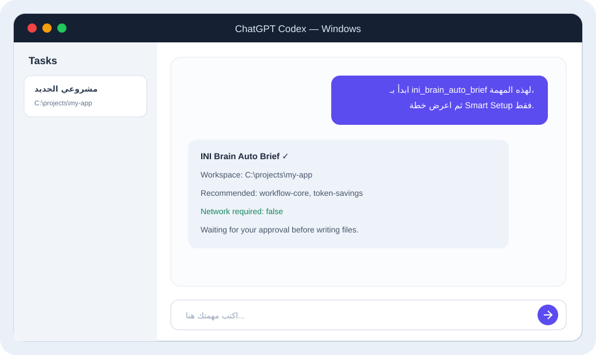

ثبت إعداد MCP
شغّل المثبّت أعلاه، أو أضف الخادم يدويًا في ملف %USERPROFILE%\.codex\config.toml.
[mcp_servers.ini-brain-ai]
command = "node"
args = ["C:/path/to/ini-brain-ai-universal/dist/mcp/server.js"]
startup_timeout_sec = 120Windows • MCP • خطوات قابلة للنسخ
الوكلاء جميعًا يستخدمون نفس العقل. الاختلاف فقط في مكان إعداد MCP ومجلد المهارات.
إذا كان معك مجلد المصدر، افتح PowerShell داخله وشغّل المثبّت الشامل. هو يبني الخادم ويضيفه إلى Codex وClaude Desktop وCline الموجودين على جهازك.
powershell -ExecutionPolicy Bypass -File .\scripts\install-all.ps1-SkipClaude أو -SkipCline أو -SkipCodex. المحرك المتقدم اختياري: -InstallCodeIntel.شغّل المثبّت أعلاه، أو أضف الخادم يدويًا في ملف %USERPROFILE%\.codex\config.toml.
[mcp_servers.ini-brain-ai]
command = "node"
args = ["C:/path/to/ini-brain-ai-universal/dist/mcp/server.js"]
startup_timeout_sec = 120إعادة التشغيل مهمة لأن قائمة أدوات MCP تُحمّل في بداية المهمة.
في Codex اختر مجلد المشروع نفسه الذي فتحته في VS Code. لا تختَر مجلد INI Brain إلا إذا كنت تطور الإضافة نفسها.
استخدم ini_brain_status وأخبرني بمسار workspace وهل .brain موجود.إذا كان المسار مشروعك، فالربط صحيح.
ابدأ بـ ini_brain_auto_brief لهذه المهمة، ثم استخدم ini_brain_get_context قبل التعديل.
اعرض خطة Smart Setup إذا احتاج المشروع، ولا تطبقها قبل موافقتي.
workspace صراحة عند استدعاء الأداة. لا تثبّت متغير INI_BRAIN_WORKSPACE عالميًا لمشروع واحد.من لوحة INI Brain اضغط Install MCP. يحفظ Cline الموجود ويحُدّث خادم ini-brain-ai فقط.
افتح Cline → MCP Servers وتأكد أن INI Brain مفعّل وليس Disabled.
قل: «استخدم ini_brain_status ثم ini_brain_auto_brief لهذه المهمة».
اضغط Copy for Cline والصق النص في المحادثة. هذا يعمل، لكنه أقل راحة من الأدوات الحية.
الإضافة تولد أيضًا .cline/skills و.clinerules/skills وworkflow خاصًا بالمشروع.
المثبّت الشامل يضيف الخادم إلى %APPDATA%\Claude\claude_desktop_config.json. أغلق التطبيق من شريط النظام بالكامل، ثم افتحه. استخدم نفس Prompt الاختبار.
شغّله من جذر المشروع. Smart Setup ينشر المهارات إلى .claude/skills/<name>/SKILL.md عند اكتشاف مجلد .claude أو ملف CLAUDE.md.
| الوكيل | مكان المهارات | ملاحظة |
|---|---|---|
| Cursor | .cursor/rules/*.mdc | المهارات عند الطلب alwaysApply: false لتقليل التوكينات. |
| Windsurf | .windsurf/rules/ | شغّل Adapters → Install All بعد تفعيل الحزم. |
| Gemini CLI | .gemini/skills/ | يُكتشف عند وجود .gemini. |
| GitHub Copilot | .github/copilot-instructions.md | تُضاف أقسام بعلامات INI Brain ويمكن إزالتها بأمان. |
| OpenCode | .opencode/skills/ | يدعم مهارات وأوامر محلية للمشروع. |
| Kiro / Kimi / Antigravity | مجلدات القواعد الخاصة بها أو .brain | استخدم Copy MCP Config إذا كان العميل يدعم stdio MCP. |
.brain وAGENTS.md، ومجلدات الوكلاء مرايا مناسبة لصيغتهم.